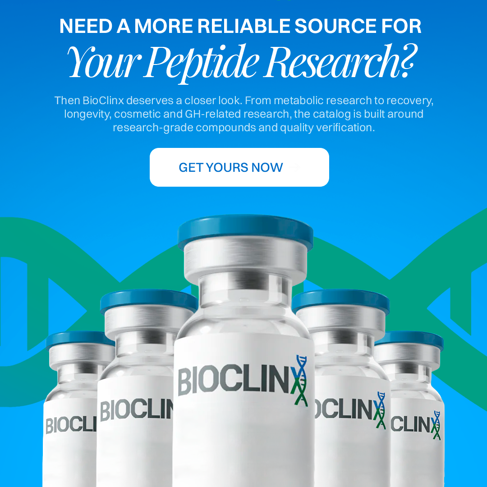
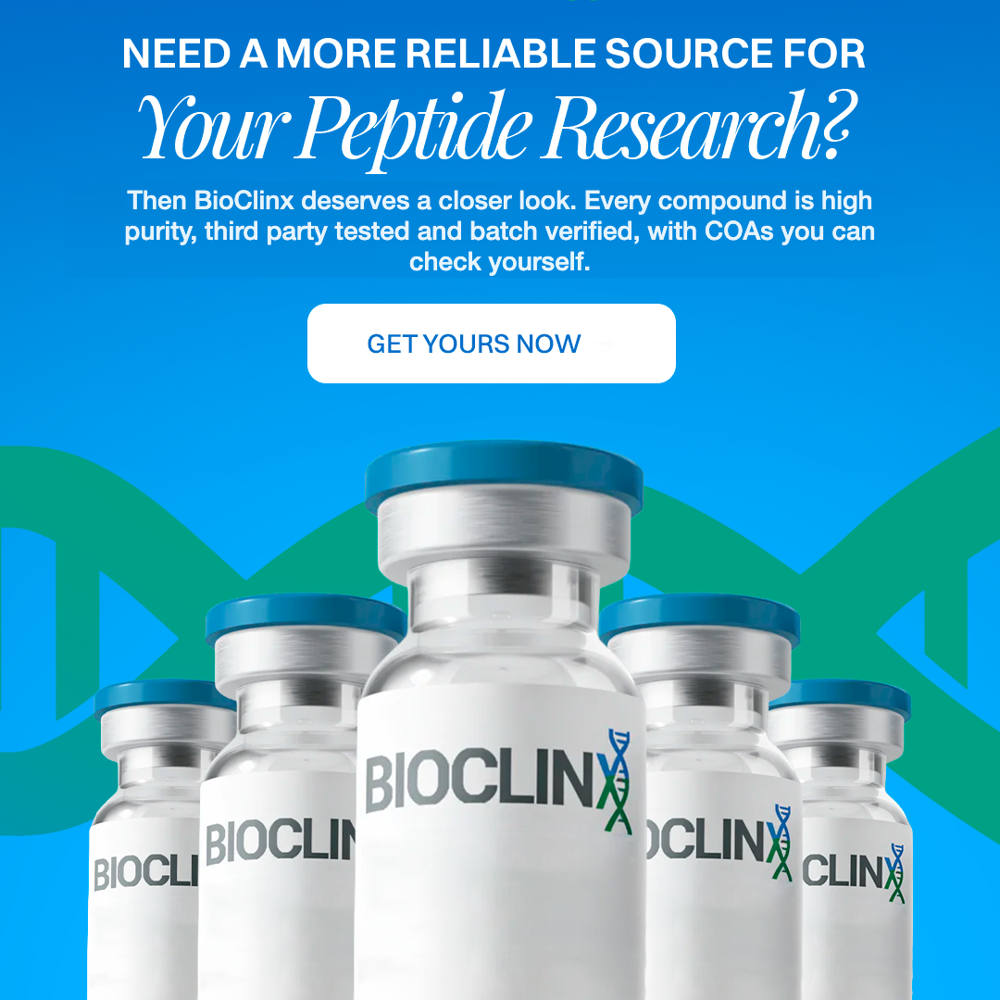
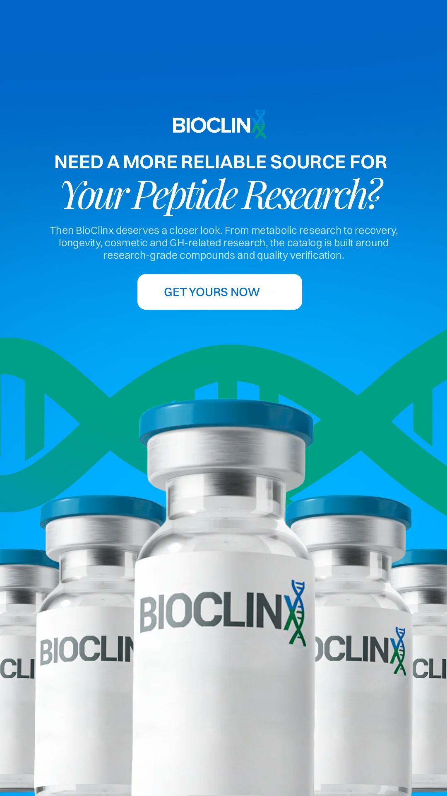
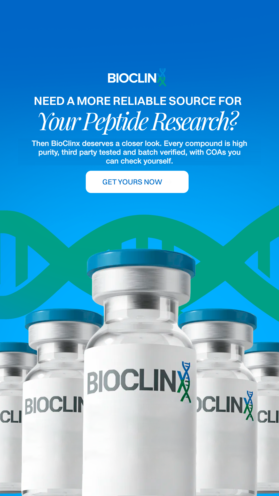

Six creatives reviewed for Meta ad policy on peptides. Five are already compliant. The Product Solution ad was remade to remove health benefit language, keeping the exact style.
Bottom line: the set is built the right way. It sells purity, third party testing, verification and fulfillment on clean brand only vials with research framing, which is the approach that gets peptide ads through review. One ad needed a copy change. It is fixed below.
| Creative | Status | Why |
|---|---|---|
| Question Based | Compliant | Purity, testing, reliable fulfillment for research focused buyers. Clean vials, no claims. |
| Product Solution | Fixed | Old copy listed metabolic, recovery, longevity, cosmetic and GH related research. Recovery, longevity and GH read as health benefits. Remade below. |
| App Mockup | Compliant | Offer plus high purity, third party testing, batch verification, fulfillment. No claims. |
| Search | Compliant | Search term is third party tested peptides. Sells verification, not outcomes. |
| IG | Compliant | Engagement question on what matters when sourcing research peptides. No claims. |
| Billboard | Compliant | Offer plus purity, testing, fulfillment for research focused buyers. Clean vials. |
Before: Then BioClinx deserves a closer look. From metabolic research to recovery, longevity, cosmetic and GH related research, the catalog is built around research grade compounds and quality verification.
After: Then BioClinx deserves a closer look. Every compound is high purity, third party tested and batch verified, with COAs you can check yourself.
Same headline, same layout, same vials, same button. Only the body copy changed, so the style you liked is intact.




One honest note. Creative is only part of it on peptides. The landing page, the specific compounds named, and the ad account history also drive approvals. These creatives are as clean as the format allows, and pairing them with a verification first landing page is what keeps them live.
{kind=link}
{kind=link}